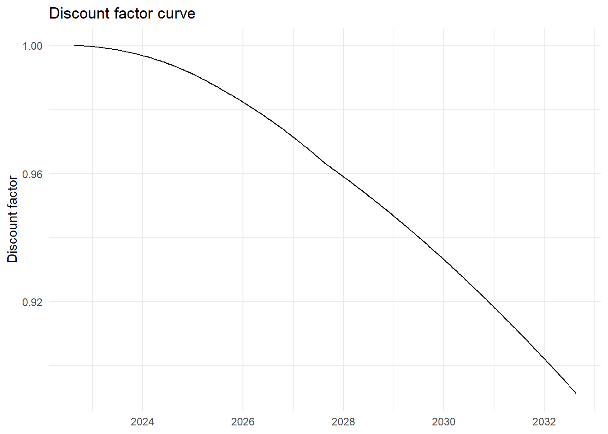
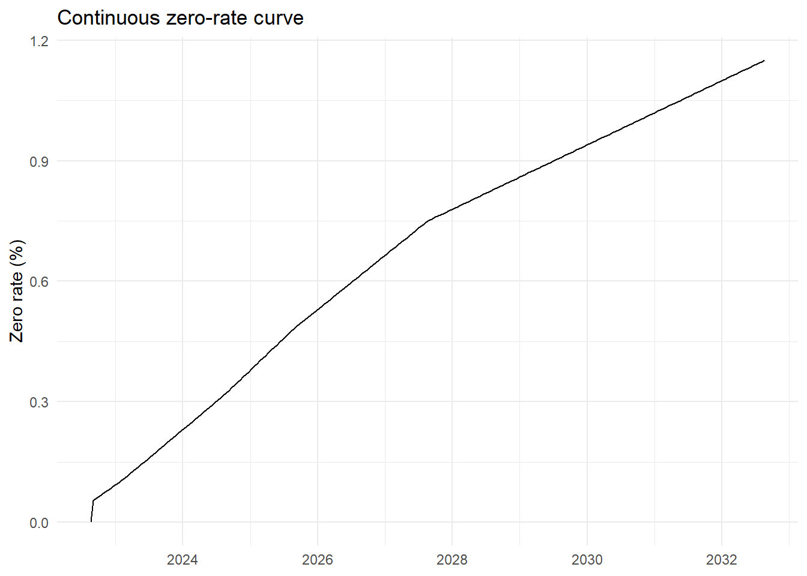
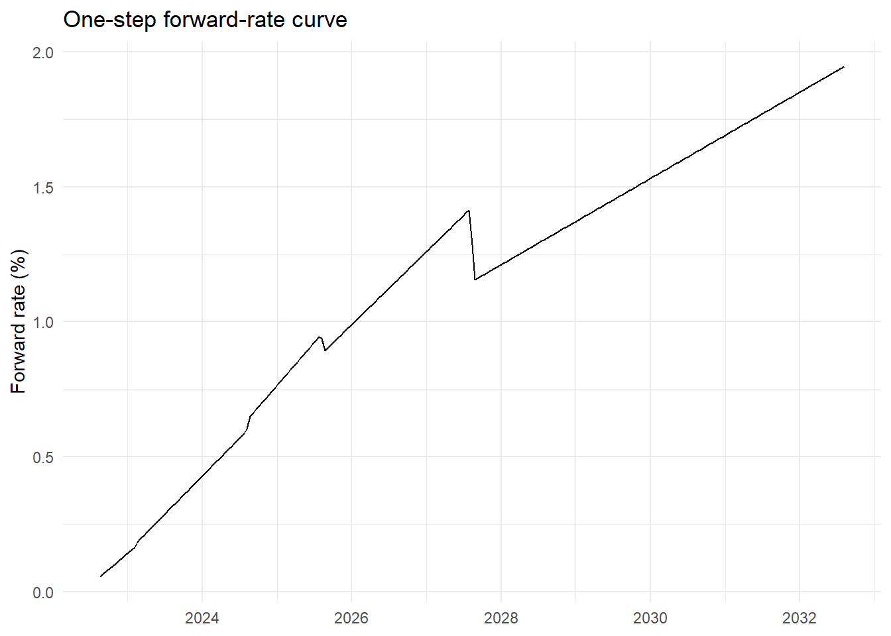
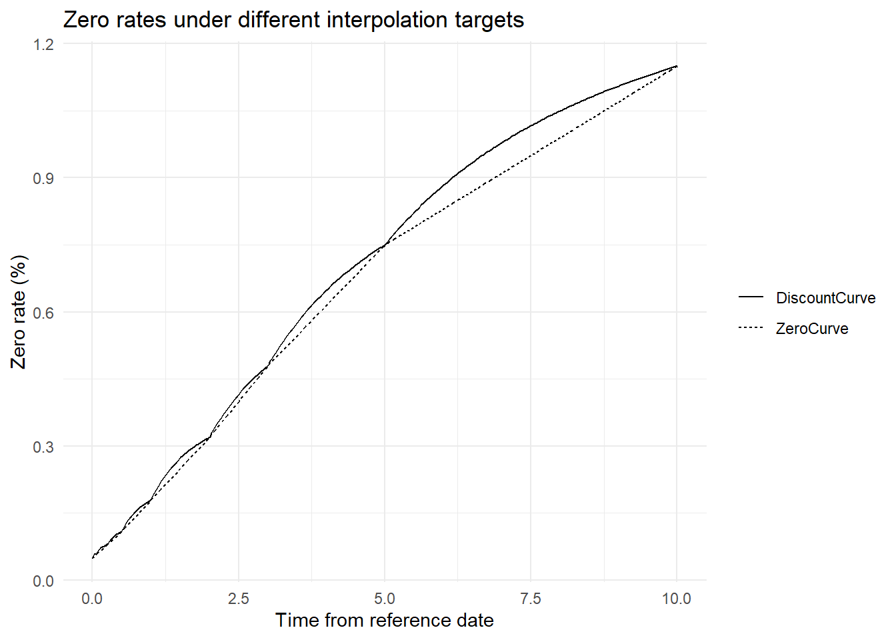
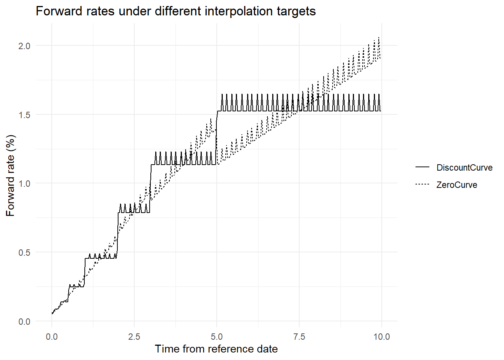
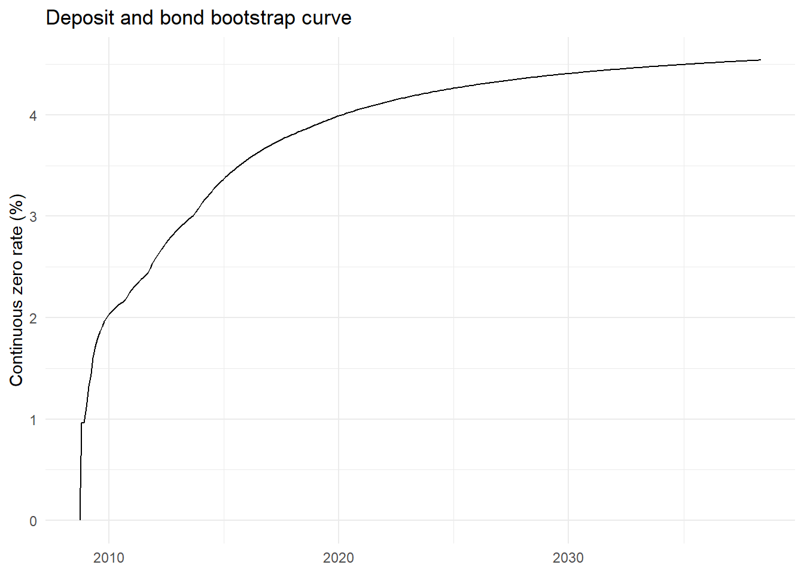
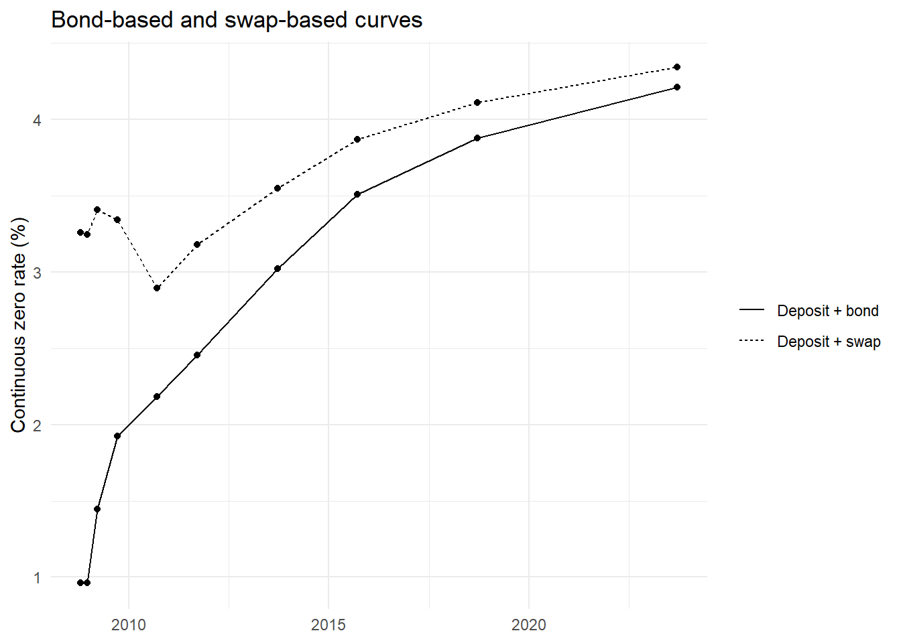
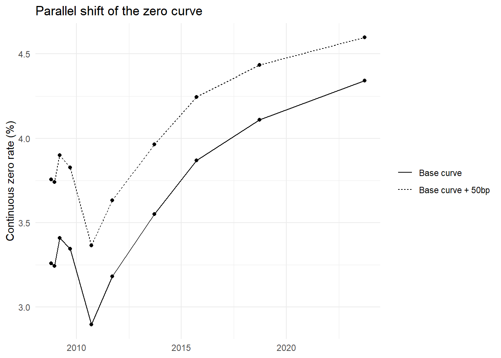

evaluation_date_chr <- "2022-08-19"
GaussQuant::set_eval_date_GQL(evaluation_date_chr)
zero_nodes <- tibble::tribble(
~tenor, ~date, ~zero_rate,
"0D", as.Date("2022-08-19"), 0.0005,
"1M", as.Date("2022-09-19"), 0.0006,
"3M", as.Date("2022-11-21"), 0.0008,
"6M", as.Date("2023-02-20"), 0.0011,
"1Y", as.Date("2023-08-21"), 0.0018,
"2Y", as.Date("2024-08-19"), 0.0032,
"3Y", as.Date("2025-08-19"), 0.0048,
"5Y", as.Date("2027-08-19"), 0.0075,
"10Y", as.Date("2032-08-19"), 0.0115
)
GaussQuant::show_tbl_GQH(
zero_nodes,
"Zero-rate nodes",
n = 20
)
#> # A tibble: 9 × 3
#> tenor date zero_rate
#> <chr> <date> <dbl>
#> 1 0D 2022-08-19 0.0005
#> 2 1M 2022-09-19 0.0006
#> 3 3M 2022-11-21 0.0008
#> 4 6M 2023-02-20 0.0011
#> 5 1Y 2023-08-21 0.0018
#> 6 2Y 2024-08-19 0.0032
#> 7 3Y 2025-08-19 0.0048
#> 8 5Y 2027-08-19 0.0075
#> 9 10Y 2032-08-19 0.0115第II-2章 金利カーブ構築と債券先物CTD、BPV
債券、金利スワップおよび金利オプションの評価では、将来キャッシュフローを現在価値へ換算するための金利期間構造が必要となる。金利期間構造は、満期ごとの金利を並べた単なる曲線ではない。市場で観測される預金金利、債券価格、FRAおよびスワップレートなどから、各将来日の割引係数を整合的に推定した結果である。
同じ期間構造は、割引係数、ゼロ金利またはフォワード金利として表現できる。これらは相互に変換可能であるが、表示方法によって曲線の特徴の見え方が異なる。割引係数は現在価値計算に直接用いられ、ゼロ金利は満期ごとの平均的な金利水準を示し、フォワード金利は将来の区間ごとの限界的な金利を示す。
本章では、最初にゼロ金利ノードから単純なカーブを構築し、割引係数、ゼロ金利およびフォワード金利の関係を確認する。次に、補間方式による曲線形状の違いを比較する。その後、預金と債券、ならびに預金とスワップを用いたブートストラップを行い、最後にImplied Term Structureと平行シフトを確認する。
2.1 金利カーブの基礎
評価日を0、将来時点を \(t\) とし、時点 \(t\) に1を受け取るキャッシュフローの現在価値を \(D(0,t)\) とする。\(D(0,t)\) は割引係数である。連続複利のゼロ金利を \(z(0,t)\) とすると、両者の関係は次式で表される。
\[ D(0,t) = \exp\left[-z(0,t)t\right] \]
したがって、割引係数からゼロ金利を求めると次式となる。
\[ z(0,t) = -\frac{\log D(0,t)}{t} \]
二つの時点 \(t_1\) と \(t_2\) の間に適用される連続複利のフォワード金利を \(f(t_1,t_2)\) とすると、次式で求められる。
\[ f(t_1,t_2) = -\frac{ \log\left[D(0,t_2)/D(0,t_1)\right] }{ t_2-t_1 } \]
割引係数、ゼロ金利およびフォワード金利は同じ期間構造を異なる方法で表している。ただし、補間方法の違いは、とくにフォワード金利の形状に強く表れる。
2.1.1 ゼロ金利ノード
最初に、評価日と複数の将来日について連続複利のゼロ金利を設定する。ここで用いる数値は、カーブの構造を確認するための例示値である。
2.1.2 ゼロカーブ
build_zero_curve_GQL()は、日付とゼロ金利の組からQuantLibのZeroCurveを構築する。ここではカーブの時間軸にActual/365 Fixedを用いる。
zero_curve <- GaussQuant::build_zero_curve_GQL(
date_chr = as.character(zero_nodes$date),
zero_rates = zero_nodes$zero_rate,
day_counter = "Actual365Fixed"
)
zero_curve_handle <- GaussQuant::yield_curve_handle_GQL(
zero_curve
)
zero_curve_tbl <- GaussQuant::curve_tbl_GQH(
curve = zero_curve,
tenors = c(
"1D", "1W", "1M", "3M", "6M",
"1Y", "2Y", "3Y", "5Y", "7Y", "10Y"
)
)
GaussQuant::show_tbl_GQH(
zero_curve_tbl,
"Zero curve",
n = 20
)
#> # A tibble: 11 × 4
#> tenor date discount zero_rate
#> <chr> <date> <dbl> <dbl>
#> 1 1D 2022-08-20 1.00000 0.00050323
#> 2 1W 2022-08-26 0.99999 0.00052258
#> 3 1M 2022-09-19 0.99995 0.00060000
#> 4 3M 2022-11-19 0.99980 0.00079365
#> 5 6M 2023-02-19 0.99945 0.0010967
#> 6 1Y 2023-08-19 0.99821 0.0017923
#> 7 2Y 2024-08-19 0.99361 0.0032000
#> 8 3Y 2025-08-19 0.98569 0.0048000
#> 9 5Y 2027-08-19 0.96317 0.0075
#> 10 7Y 2029-08-19 0.93824 0.0091004
#> 11 10Y 2032-08-19 0.89128 0.0115カーブから取得したゼロ金利は連続複利表示である。入力ノードの間ではQuantLibの補間規則に従って金利が補間される。
2.1.3 カーブの表現
カーブを細かい時間間隔へ展開し、割引係数、ゼロ金利および隣接区間のフォワード金利を計算する。
zero_curve_grid <- GaussQuant::curve_grid_tbl_GQL(
curve = zero_curve,
n = 240L,
extrapolate = TRUE
) |>
dplyr::mutate(
next_time = dplyr::lead(.data$time),
next_discount = dplyr::lead(.data$discount_factor),
forward_rate = dplyr::if_else(
!is.na(.data$next_time) &
.data$next_time > .data$time &
.data$discount_factor > 0 &
.data$next_discount > 0,
-log(.data$next_discount / .data$discount_factor) /
(.data$next_time - .data$time),
NA_real_
)
)
grid_show_index <- unique(
round(
seq(
from = 1,
to = nrow(zero_curve_grid),
length.out = 12
)
)
)
GaussQuant::show_tbl_GQH(
zero_curve_grid |>
dplyr::slice(grid_show_index) |>
dplyr::select(
.data$curve_date,
.data$time,
.data$discount_factor,
.data$zero_rate,
.data$forward_rate
),
"Zero-curve grid",
n = 20
)
#> # A tibble: 12 × 5
#> curve_date time discount_factor zero_rate forward_rate
#> <date> <dbl> <dbl> <dbl> <dbl>
#> 1 2022-08-19 0 1 0 0.00054839
#> 2 2023-07-21 0.92055 0.99845 0.0016808 0.0030308
#> 3 2024-06-06 1.8 0.99477 0.0029154 0.0055000
#> 4 2025-05-08 2.7205 0.98824 0.0043485 0.0087671
#> 5 2026-04-09 3.6411 0.97960 0.0056618 0.010636
#> 6 2027-03-12 4.5644 0.96896 0.0069082 0.013126
#> 7 2028-01-26 5.4411 0.95819 0.0078503 0.012233
#> 8 2028-12-28 6.3644 0.94681 0.0085881 0.013707
#> 9 2029-11-29 7.2849 0.93433 0.0093238 0.015178
#> 10 2030-10-31 8.2055 0.92077 0.010059 0.016652
#> 11 2031-09-17 9.0849 0.90685 0.010762 0.018057
#> 12 2032-08-19 10.008 0.89128 0.0115 NAdiscount_factor_plot <- zero_curve_grid |>
ggplot2::ggplot(
ggplot2::aes(
x = .data$curve_date,
y = .data$discount_factor
)
) +
ggplot2::geom_line() +
ggplot2::labs(
title = "Discount factor curve",
x = NULL,
y = "Discount factor"
) +
ggplot2::theme_minimal()
zero_rate_plot <- zero_curve_grid |>
ggplot2::ggplot(
ggplot2::aes(
x = .data$curve_date,
y = 100 * .data$zero_rate
)
) +
ggplot2::geom_line() +
ggplot2::labs(
title = "Continuous zero-rate curve",
x = NULL,
y = "Zero rate (%)"
) +
ggplot2::theme_minimal()
forward_rate_plot <- zero_curve_grid |>
dplyr::filter(!is.na(.data$forward_rate)) |>
ggplot2::ggplot(
ggplot2::aes(
x = .data$curve_date,
y = 100 * .data$forward_rate
)
) +
ggplot2::geom_line() +
ggplot2::labs(
title = "One-step forward-rate curve",
x = NULL,
y = "Forward rate (%)"
) +
ggplot2::theme_minimal()
print(discount_factor_plot)
print(zero_rate_plot)
print(forward_rate_plot)
割引係数は将来の1単位を現在価値へ換算する倍率である。正の金利環境では、満期が長くなるほど一般に小さくなる。ゼロ金利は評価日から各満期までの平均的な金利水準を示す。一方、フォワード金利は隣接する二時点間の金利を表すため、補間方法やノード配置の影響を強く受ける。
2.2 補間と参照日
2.2.1 補間方式とフォワード金利
市場では限られた満期の金利または価格しか観測できないため、ノード間の値を補間する必要がある。補間対象には、ゼロ金利、割引係数、対数割引係数またはフォワード金利などがある。
ここでは、同じゼロ金利ノードから次の二つのカーブを構築する。
- ZeroCurve：ゼロ金利を基礎とするカーブ
- DiscountCurve：ノードのゼロ金利を割引係数へ変換し、割引係数を基礎とするカーブ
discount_curve <- GaussQuant::build_discount_curve_GQL(
nodes = zero_nodes |>
dplyr::select(
.data$date,
.data$zero_rate
),
day_counter = "Actual365Fixed"
)
discount_curve_handle <- GaussQuant::yield_curve_handle_GQL(
discount_curve
)
comparison_max_time <- min(
as.numeric(zero_curve$maxTime()),
as.numeric(discount_curve$maxTime())
)
comparison_time_grid <- seq(
from = 0,
to = comparison_max_time,
length.out = 300
)
comparison_reference_date <- as.Date(
GaussQuant::iso_GQL(
zero_curve$referenceDate()
)
)
interpolation_tbl <- tibble::tibble(
time = comparison_time_grid,
date = comparison_reference_date +
round(comparison_time_grid * 365)
) |>
dplyr::mutate(
ql_date = purrr::map(
as.character(.data$date),
GaussQuant::date_GQL
),
zero_curve_discount = purrr::map_dbl(
.data$ql_date,
~ GaussQuant::curve_discount_safe_GQL(
zero_curve,
.x
)
),
discount_curve_discount = purrr::map_dbl(
.data$ql_date,
~ GaussQuant::curve_discount_safe_GQL(
discount_curve,
.x
)
)
) |>
dplyr::select(
-.data$ql_date
) |>
tidyr::pivot_longer(
cols = c(
zero_curve_discount,
discount_curve_discount
),
names_to = "interpolation",
values_to = "discount_factor"
) |>
dplyr::mutate(
interpolation = dplyr::recode(
.data$interpolation,
zero_curve_discount = "ZeroCurve",
discount_curve_discount = "DiscountCurve"
)
) |>
dplyr::group_by(
.data$interpolation
) |>
dplyr::arrange(
.data$interpolation,
.data$time
) |>
dplyr::mutate(
zero_rate = dplyr::if_else(
.data$time > 0 &
.data$discount_factor > 0,
-log(.data$discount_factor) /
.data$time,
zero_nodes$zero_rate[[1]]
),
next_time = dplyr::lead(
.data$time
),
next_discount = dplyr::lead(
.data$discount_factor
),
forward_rate = dplyr::if_else(
!is.na(.data$next_time) &
.data$next_time > .data$time &
.data$discount_factor > 0 &
.data$next_discount > 0,
-log(
.data$next_discount /
.data$discount_factor
) / (
.data$next_time -
.data$time
),
NA_real_
)
) |>
dplyr::ungroup()interpolation_zero_plot <- interpolation_tbl |>
ggplot2::ggplot(
ggplot2::aes(
x = .data$time,
y = 100 * .data$zero_rate,
linetype = .data$interpolation
)
) +
ggplot2::geom_line() +
ggplot2::labs(
title = "Zero rates under different interpolation targets",
x = "Time from reference date",
y = "Zero rate (%)",
linetype = NULL
) +
ggplot2::theme_minimal()
interpolation_forward_plot <- interpolation_tbl |>
dplyr::filter(!is.na(.data$forward_rate)) |>
ggplot2::ggplot(
ggplot2::aes(
x = .data$time,
y = 100 * .data$forward_rate,
linetype = .data$interpolation
)
) +
ggplot2::geom_line() +
ggplot2::labs(
title = "Forward rates under different interpolation targets",
x = "Time from reference date",
y = "Forward rate (%)",
linetype = NULL
) +
ggplot2::theme_minimal()
print(interpolation_zero_plot)
print(interpolation_forward_plot)
両カーブは入力ノードでほぼ同じ情報を再現するが、ノード間では異なる形状を示す。ゼロ金利のグラフでは差が小さく見えても、フォワード金利へ変換すると差が拡大することがある。したがって、カーブの妥当性はゼロ金利だけでなく、フォワード金利も確認する必要がある。
2.2.2 参照日と評価日
カーブの参照日は、割引係数が1となる時点であり、時間軸の起点である。日付ノードから構築したカーブでは、通常、最初のノード日が固定参照日となる。
次の確認では、QuantLibの評価日を変更した後も、すでに構築済みのZeroCurveの参照日が変わらないことを確認する。
reference_date_before <- as.Date(
GaussQuant::iso_GQL(
zero_curve$referenceDate()
)
)
GaussQuant::set_eval_date_GQL(
"2022-09-19"
)
reference_date_after <- as.Date(
GaussQuant::iso_GQL(
zero_curve$referenceDate()
)
)
reference_date_tbl <- tibble::tribble(
~item, ~value,
"curve_reference_date_before", as.character(reference_date_before),
"evaluation_date_after_change", "2022-09-19",
"curve_reference_date_after", as.character(reference_date_after)
)
GaussQuant::show_tbl_GQH(
reference_date_tbl,
"Fixed reference date"
)
#> # A tibble: 3 × 2
#> item value
#> <chr> <chr>
#> 1 curve_reference_date_before 2022-08-19
#> 2 evaluation_date_after_change 2022-09-19
#> 3 curve_reference_date_after 2022-08-19
GaussQuant::set_eval_date_GQL(
evaluation_date_chr
)固定参照日のカーブは、評価日を変更しても参照日が変化しない。一方、決済日数と休日カレンダーから参照日を決定するMoving Reference Date型のカーブでは、評価日の変更に応じて参照日も移動する。評価日を進めるシナリオ分析では、既存カーブを固定したまま使うのか、市場データから新しいカーブを再構築するのかを区別する必要がある。
2.3 ブートストラップ
2.3.1 預金と債券
市場ではゼロ金利を直接観測できる満期は限られている。そのため、短期預金、国債価格およびスワップレートなどから、割引係数を順次推定するブートストラップを行う。
短期部分では預金金利から最初の割引係数を求め、その先では固定利付債の市場価格と理論価格が一致するようにカーブを延長する。GaussQuantのbuild_bond_discount_curve_GQL()は、短期預金と複数の固定利付債を用いてPiecewiseFlatForwardカーブを構築する。
GaussQuant::set_eval_date_GQL(
"2008-09-15"
)
bond_curve <- GaussQuant::build_bond_discount_curve_GQL(
settlement_date = "2008-09-18",
fixing_days = 3,
settlement_days = 3
)
bond_curve_tbl <- GaussQuant::curve_tbl_GQH(
curve = bond_curve,
tenors = c(
"1M", "3M", "6M", "1Y",
"2Y", "3Y", "5Y", "7Y",
"10Y", "15Y", "20Y"
)
)
GaussQuant::show_tbl_GQH(
bond_curve_tbl,
"Deposit and bond bootstrap curve",
n = 30
)
#> # A tibble: 11 × 4
#> tenor date discount zero_rate
#> <chr> <date> <dbl> <dbl>
#> 1 1M 2008-10-18 0.99921 0.0096148
#> 2 3M 2008-12-18 0.99761 0.0096148
#> 3 6M 2009-03-18 0.99286 0.014471
#> 4 1Y 2009-09-18 0.98097 0.019229
#> 5 2Y 2010-09-18 0.95732 0.021818
#> 6 3Y 2011-09-18 0.92904 0.024541
#> 7 5Y 2013-09-18 0.85971 0.030237
#> 8 7Y 2015-09-18 0.78217 0.035102
#> 9 10Y 2018-09-18 0.67867 0.038764
#> 10 15Y 2023-09-18 0.53179 0.042103
#> 11 20Y 2028-09-18 0.41668 0.043772bond_curve_grid <- GaussQuant::curve_grid_tbl_GQL(
curve = bond_curve,
n = 300L,
extrapolate = TRUE
)
bond_curve_plot <- bond_curve_grid |>
ggplot2::ggplot(
ggplot2::aes(
x = .data$curve_date,
y = 100 * .data$zero_rate
)
) +
ggplot2::geom_line() +
ggplot2::labs(
title = "Deposit and bond bootstrap curve",
x = NULL,
y = "Continuous zero rate (%)"
) +
ggplot2::theme_minimal()
print(bond_curve_plot)
債券価格を用いるブートストラップでは、各債券のクーポン日、満期日、経過利子および日数計算規則がカーブ構築に影響する。債券のクーポン計算には商品固有の日数計算規則を用いる一方、期間構造の時間軸には単純で加法的な日数計算規則を用いる必要がある。
2.3.2 預金とスワップ
次に、短期部分を預金金利、中長期部分を固定対変動金利スワップの市場レートから構築する。スワップの市場レートは、固定レグと変動レグの現在価値を等しくするパー・スワップレートである。
GaussQuantのbuild_swap_curve_GQL()は、短期預金と複数満期のスワップレートを用いてPiecewiseFlatForwardカーブを構築する。
swap_curve <- GaussQuant::build_swap_curve_GQL(
settlement_date = "2008-09-18",
fixing_days = 3
)
swap_curve_handle <- GaussQuant::yield_curve_handle_GQL(
swap_curve
)
swap_curve_tbl <- GaussQuant::curve_tbl_GQH(
curve = swap_curve,
tenors = c(
"1W", "1M", "3M", "6M",
"1Y", "2Y", "3Y", "5Y",
"7Y", "10Y", "15Y"
)
)
GaussQuant::show_tbl_GQH(
swap_curve_tbl,
"Deposit and swap bootstrap curve",
n = 30
)
#> # A tibble: 11 × 4
#> tenor date discount zero_rate
#> <chr> <date> <dbl> <dbl>
#> 1 1W 2008-09-25 0.99916 0.044079
#> 2 1M 2008-10-18 0.99733 0.032579
#> 3 3M 2008-12-18 0.99197 0.032440
#> 4 6M 2009-03-18 0.98327 0.034085
#> 5 1Y 2009-09-18 0.96714 0.033440
#> 6 2Y 2010-09-18 0.94376 0.028954
#> 7 3Y 2011-09-18 0.90902 0.031805
#> 8 5Y 2013-09-18 0.83739 0.035499
#> 9 7Y 2015-09-18 0.76276 0.038692
#> 10 10Y 2018-09-18 0.66310 0.041086
#> 11 15Y 2023-09-18 0.52138 0.043421comparison_tenors <- c(
"1M", "3M", "6M", "1Y",
"2Y", "3Y", "5Y", "7Y",
"10Y", "15Y"
)
bootstrap_comparison_tbl <- dplyr::bind_rows(
GaussQuant::curve_tbl_GQH(
curve = bond_curve,
tenors = comparison_tenors
) |>
dplyr::mutate(
curve = "Deposit + bond"
),
GaussQuant::curve_tbl_GQH(
curve = swap_curve,
tenors = comparison_tenors
) |>
dplyr::mutate(
curve = "Deposit + swap"
)
)
GaussQuant::show_tbl_GQH(
bootstrap_comparison_tbl,
"Bootstrap curve comparison",
n = 30
)
#> # A tibble: 20 × 5
#> tenor date discount zero_rate curve
#> <chr> <date> <dbl> <dbl> <chr>
#> 1 1M 2008-10-18 0.99921 0.0096148 Deposit + bond
#> 2 3M 2008-12-18 0.99761 0.0096148 Deposit + bond
#> 3 6M 2009-03-18 0.99286 0.014471 Deposit + bond
#> 4 1Y 2009-09-18 0.98097 0.019229 Deposit + bond
#> 5 2Y 2010-09-18 0.95732 0.021818 Deposit + bond
#> 6 3Y 2011-09-18 0.92904 0.024541 Deposit + bond
#> 7 5Y 2013-09-18 0.85971 0.030237 Deposit + bond
#> 8 7Y 2015-09-18 0.78217 0.035102 Deposit + bond
#> 9 10Y 2018-09-18 0.67867 0.038764 Deposit + bond
#> 10 15Y 2023-09-18 0.53179 0.042103 Deposit + bond
#> 11 1M 2008-10-18 0.99733 0.032579 Deposit + swap
#> 12 3M 2008-12-18 0.99197 0.032440 Deposit + swap
#> 13 6M 2009-03-18 0.98327 0.034085 Deposit + swap
#> 14 1Y 2009-09-18 0.96714 0.033440 Deposit + swap
#> 15 2Y 2010-09-18 0.94376 0.028954 Deposit + swap
#> 16 3Y 2011-09-18 0.90902 0.031805 Deposit + swap
#> 17 5Y 2013-09-18 0.83739 0.035499 Deposit + swap
#> 18 7Y 2015-09-18 0.76276 0.038692 Deposit + swap
#> 19 10Y 2018-09-18 0.66310 0.041086 Deposit + swap
#> 20 15Y 2023-09-18 0.52138 0.043421 Deposit + swap
bootstrap_zero_plot <- bootstrap_comparison_tbl |>
ggplot2::ggplot(
ggplot2::aes(
x = .data$date,
y = 100 * .data$zero_rate,
linetype = .data$curve
)
) +
ggplot2::geom_line() +
ggplot2::geom_point() +
ggplot2::labs(
title = "Bond-based and swap-based curves",
x = NULL,
y = "Continuous zero rate (%)",
linetype = NULL
) +
ggplot2::theme_minimal()
print(bootstrap_zero_plot)
債券カーブとスワップカーブは、異なる市場商品から構築されるため一致するとは限らない。両者の差には、市場の流動性、商品固有の信用・担保条件、日数計算規則および観測時点の違いが含まれる。
FRAは、将来の一定期間に適用される金利を直接観測する商品として、預金とスワップの間を接続するために用いられる。本章の実装では預金とスワップを用いるが、FRAを追加する場合も、各市場商品の理論価格が市場価格と一致するように同じブートストラップの枠組みへ組み込む。
2.4 カーブ操作と検証
2.4.1 Implied Term Structure
Implied Term Structureは、既存カーブが示す将来の割引関係を保ったまま、参照日を将来へ移した期間構造である。元のカーブの参照日を \(t_0\)、新しい参照日を \(t_1\)、将来日を \(t_2\) とすると、Implied Term Structureの割引係数は概念的に次式で表される。
\[ D_{t_1}(t_2) = \frac{ D_{t_0}(t_2) }{ D_{t_0}(t_1) } \]
implied_reference_date <- GaussQuant::date_GQL(
"2009-09-18"
)
implied_constructor <- get0(
"ImpliedTermStructure",
envir = asNamespace("QuantLib"),
inherits = FALSE
)
implied_curve <- if (is.null(implied_constructor)) {
NULL
} else {
tryCatch(
implied_constructor(
swap_curve_handle,
implied_reference_date
),
error = function(e) NULL
)
}
implied_curve_tbl <- if (is.null(implied_curve)) {
tibble::tibble(
status = "ImpliedTermStructure is not available in the installed QuantLib binding."
)
} else {
GaussQuant::curve_tbl_GQH(
curve = implied_curve,
tenors = c(
"1M", "3M", "6M", "1Y",
"2Y", "3Y", "5Y", "10Y"
)
)
}
GaussQuant::show_tbl_GQH(
implied_curve_tbl,
"Implied term structure",
n = 20
)
#> # A tibble: 8 × 4
#> tenor date discount zero_rate
#> <chr> <date> <dbl> <dbl>
#> 1 1M 2009-10-18 0.99799 0.024471
#> 2 3M 2009-12-18 0.99392 0.024471
#> 3 6M 2010-03-18 0.98794 0.024471
#> 4 1Y 2010-09-18 0.97583 0.024471
#> 5 2Y 2011-09-18 0.93990 0.030989
#> 6 3Y 2012-09-18 0.90209 0.034338
#> 7 5Y 2014-09-18 0.82636 0.038145
#> 8 10Y 2019-09-18 0.65344 0.042551Implied Term Structureは、将来時点から見た割引係数を現在のカーブから機械的に導くものであり、将来の市場カーブを予測したものではない。評価日を将来へ進めたシナリオで市場リスクを評価する場合には、カーブの単純な時間経過と市場金利の変動を区別する必要がある。
2.4.2 カーブの平行シフト
金利リスク分析では、基準カーブに一定のスプレッドを加えたカーブを用いる。すべての満期へ同じスプレッドを加える変化を平行シフトという。
ここでは、預金・スワップカーブへ50ベーシスポイントを加え、ゼロ金利と割引係数の変化を確認する。
parallel_spread <- 50 / 10000
spreaded_curve_bundle <- GaussQuant::make_zero_spreaded_curve_GQL(
base_curve_handle = swap_curve_handle,
spread_rate = parallel_spread,
day_counter = QuantLib::Actual365Fixed(),
extrapolate = TRUE
)
spreaded_curve <- spreaded_curve_bundle$curve
parallel_shift_tbl <- dplyr::bind_rows(
GaussQuant::curve_tbl_GQH(
curve = swap_curve,
tenors = comparison_tenors
) |>
dplyr::mutate(
curve = "Base curve"
),
GaussQuant::curve_tbl_GQH(
curve = spreaded_curve,
tenors = comparison_tenors
) |>
dplyr::mutate(
curve = "Base curve + 50bp"
)
)
parallel_shift_wide_tbl <- parallel_shift_tbl |>
dplyr::select(
.data$tenor,
.data$date,
.data$curve,
.data$discount,
.data$zero_rate
) |>
tidyr::pivot_wider(
names_from = curve,
values_from = c(
discount,
zero_rate
)
) |>
dplyr::mutate(
observed_zero_shift_bp =
10000 * (
.data$`zero_rate_Base curve + 50bp` -
.data$`zero_rate_Base curve`
)
)
GaussQuant::show_tbl_GQH(
parallel_shift_wide_tbl,
"Parallel curve shift",
n = 30
)
#> # A tibble: 10 × 7
#> tenor date `discount_Base curve` `discount_Base curve + 50bp`
#> <chr> <date> <dbl> <dbl>
#> 1 1M 2008-10-18 0.99733 0.99693
#> 2 3M 2008-12-18 0.99197 0.99074
#> 3 6M 2009-03-18 0.98327 0.98088
#> 4 1Y 2009-09-18 0.96714 0.96249
#> 5 2Y 2010-09-18 0.94376 0.93494
#> 6 3Y 2011-09-18 0.90902 0.89679
#> 7 5Y 2013-09-18 0.83739 0.82022
#> 8 7Y 2015-09-18 0.76276 0.74293
#> 9 10Y 2018-09-18 0.66310 0.64182
#> 10 15Y 2023-09-18 0.52138 0.50176
#> `zero_rate_Base curve` `zero_rate_Base curve + 50bp` observed_zero_shift_bp
#> <dbl> <dbl> <dbl>
#> 1 0.032579 0.037565 49.856
#> 2 0.032440 0.037397 49.568
#> 3 0.034085 0.038996 49.104
#> 4 0.033440 0.038264 48.240
#> 5 0.028954 0.033650 46.967
#> 6 0.031805 0.036320 45.144
#> 7 0.035499 0.039642 41.437
#> 8 0.038692 0.042456 37.638
#> 9 0.041086 0.044348 32.617
#> 10 0.043421 0.045978 25.572parallel_shift_plot <- parallel_shift_tbl |>
ggplot2::ggplot(
ggplot2::aes(
x = .data$date,
y = 100 * .data$zero_rate,
linetype = .data$curve
)
) +
ggplot2::geom_line() +
ggplot2::geom_point() +
ggplot2::labs(
title = "Parallel shift of the zero curve",
x = NULL,
y = "Continuous zero rate (%)",
linetype = NULL
) +
ggplot2::theme_minimal()
print(parallel_shift_plot)
正の平行シフトでは割引率が上昇し、将来キャッシュフローの割引係数は低下する。そのため、通常の固定キャッシュフロー商品の現在価値も低下する。
実際の市場変動は完全な平行移動とは限らない。短期だけが動く変化、長期だけが動く変化、曲線の傾きが変化するスティープニングまたはフラットニングも生じる。年限別のKey Rate Shiftでは、特定年限のノードを動かし、周辺年限へ補間しながら再評価する。これらは平行シフトより細かなリスク分解である。
2.4.3 カーブの検証
構築したカーブについて、少なくとも次の点を確認する必要がある。
- 参照日と最終日が想定どおりであること
- 割引係数が正であること
- 欠損値や計算不能な区間がないこと
- ゼロ金利とフォワード金利に不自然な跳びがないこと
- 入力商品の理論価格または理論レートが市場値へ再現されること
まず、例示的なゼロ金利ノードが二つのカーブでどの程度再現されるかを確認する。
node_recovery_tbl <- zero_nodes |>
dplyr::mutate(
ql_date = purrr::map(
as.character(.data$date),
GaussQuant::date_GQL
),
time = as.numeric(
.data$date -
as.Date(evaluation_date_chr)
) / 365,
zero_curve_discount = purrr::map_dbl(
.data$ql_date,
~ GaussQuant::curve_discount_safe_GQL(
zero_curve,
.x
)
),
discount_curve_discount = purrr::map_dbl(
.data$ql_date,
~ GaussQuant::curve_discount_safe_GQL(
discount_curve,
.x
)
),
zero_curve_implied_rate = dplyr::if_else(
.data$time > 0,
-log(.data$zero_curve_discount) /
.data$time,
.data$zero_rate
),
discount_curve_implied_rate = dplyr::if_else(
.data$time > 0,
-log(.data$discount_curve_discount) /
.data$time,
.data$zero_rate
),
zero_curve_error =
.data$zero_curve_implied_rate -
.data$zero_rate,
discount_curve_error =
.data$discount_curve_implied_rate -
.data$zero_rate
) |>
dplyr::select(
.data$tenor,
.data$date,
.data$zero_rate,
.data$zero_curve_implied_rate,
.data$discount_curve_implied_rate,
.data$zero_curve_error,
.data$discount_curve_error
)
GaussQuant::show_tbl_GQH(
node_recovery_tbl,
"Node recovery check",
n = 20
)
#> # A tibble: 9 × 7
#> tenor date zero_rate zero_curve_implied_rate discount_curve_implied_rate
#> <chr> <date> <dbl> <dbl> <dbl>
#> 1 0D 2022-08-19 0.0005 0.0005 0.0005
#> 2 1M 2022-09-19 0.0006 0.00060000 0.00060000
#> 3 3M 2022-11-21 0.0008 0.00080000 0.00080000
#> 4 6M 2023-02-20 0.0011 0.0011000 0.0011000
#> 5 1Y 2023-08-21 0.0018 0.0018000 0.0018000
#> 6 2Y 2024-08-19 0.0032 0.0032000 0.0032000
#> 7 3Y 2025-08-19 0.0048 0.0048000 0.0048000
#> 8 5Y 2027-08-19 0.0075 0.0075 0.0075
#> 9 10Y 2032-08-19 0.0115 0.0115 0.0115
#> zero_curve_error discount_curve_error
#> <dbl> <dbl>
#> 1 0 0
#> 2 2.2757e-16 2.2757e-16
#> 3 -1.8117e-16 -1.8117e-16
#> 4 6.3317e-17 6.3317e-17
#> 5 1.7781e-17 1.7781e-17
#> 6 6.9389e-18 6.9389e-18
#> 7 8.6736e-18 8.6736e-18
#> 8 2.6021e-18 2.6021e-18
#> 9 1.7347e-18 1.7347e-18続いて、各カーブを密なグリッドへ展開し、割引係数の範囲と欠損値を確認する。
curve_validation_tbl <- dplyr::bind_rows(
GaussQuant::curve_grid_tbl_GQL(
zero_curve,
n = 200L,
extrapolate = TRUE
) |>
dplyr::mutate(
curve = "ZeroCurve"
),
GaussQuant::curve_grid_tbl_GQL(
discount_curve,
n = 200L,
extrapolate = TRUE
) |>
dplyr::mutate(
curve = "DiscountCurve"
),
GaussQuant::curve_grid_tbl_GQL(
bond_curve,
n = 200L,
extrapolate = TRUE
) |>
dplyr::mutate(
curve = "Deposit + bond"
),
GaussQuant::curve_grid_tbl_GQL(
swap_curve,
n = 200L,
extrapolate = TRUE
) |>
dplyr::mutate(
curve = "Deposit + swap"
),
GaussQuant::curve_grid_tbl_GQL(
spreaded_curve,
n = 200L,
extrapolate = TRUE
) |>
dplyr::mutate(
curve = "Deposit + swap + 50bp"
)
) |>
dplyr::group_by(.data$curve) |>
dplyr::summarise(
first_date = min(
.data$curve_date,
na.rm = TRUE
),
last_date = max(
.data$curve_date,
na.rm = TRUE
),
min_discount = min(
.data$discount_factor,
na.rm = TRUE
),
max_discount = max(
.data$discount_factor,
na.rm = TRUE
),
nonpositive_discount_count = sum(
.data$discount_factor <= 0,
na.rm = TRUE
),
missing_discount_count = sum(
is.na(.data$discount_factor)
),
missing_zero_rate_count = sum(
is.na(.data$zero_rate)
),
.groups = "drop"
)
GaussQuant::show_tbl_GQH(
curve_validation_tbl,
"Curve validation summary",
n = 20
)
#> # A tibble: 5 × 8
#> curve first_date last_date min_discount max_discount
#> <chr> <date> <date> <dbl> <dbl>
#> 1 Deposit + bond 2008-09-18 2038-05-15 0.26019 1
#> 2 Deposit + swap 2008-09-18 2023-09-18 0.52138 1
#> 3 Deposit + swap + 50bp 2008-09-18 2023-09-18 0.50176 1
#> 4 DiscountCurve 2022-08-19 2032-08-19 0.89128 1
#> 5 ZeroCurve 2022-08-19 2032-08-19 0.89128 1
#> nonpositive_discount_count missing_discount_count missing_zero_rate_count
#> <int> <int> <int>
#> 1 0 0 0
#> 2 0 0 0
#> 3 0 0 0
#> 4 0 0 0
#> 5 0 0 0割引係数が正であることは、裁定のない期間構造を確認するための基本条件である。ただし、正の割引係数だけでは十分ではない。入力商品の再評価、補間区間のフォワード金利、外挿方法、日数計算規則および参照日の設定も確認する必要がある。
2.5 国債先物の基礎
株価指数先物では、指数そのものを受け渡すことができないため、満期時には差金決済が行われる。これに対し、国債先物では、満期まで保有された建玉について、受渡適格銘柄に指定された国債を用いた現物受渡しが行われる。現物受渡しを通じて、先物市場と現物国債市場の価格連関が保たれている。
国債先物の取引対象は、実際に発行された特定の国債ではなく、クーポンや償還期限を標準化した標準物である。この標準物は実在しないため、最終決済では、取引所が定めた複数の受渡適格銘柄のいずれかを用いて受渡しを行う。銘柄ごとにクーポン、残存期間および価格が異なるため、その価値の差は変換係数（Conversion Factor: CF）によって調整される。
受渡銘柄を選択する権利は、国債を受け取る買方ではなく、国債を引き渡す売方にある。したがって売方は、受渡適格銘柄の中から、現物価格だけでなく、変換係数、経過利子、クーポン収入および受渡日までの資金調達費用を考慮し、最も低い経済的費用で受け渡すことのできる銘柄を選択する。この銘柄を最割安銘柄（Cheapest-to-Deliver: CTD）という。
CTDは、単純に現物単価が最も低い債券ではない。先物価格に変換係数を乗じて求める受渡価値と、現物債を調達して受渡日まで保有する費用とを比較して決定される。
本章では、受渡適格銘柄ごとに現物価格、グロスベーシス、キャリー、ネットベーシスおよびインプライド・レポを計算する。これらの比較を通じて、どのような経済計算によってCTDが選定されるのかを確認し、最後にCTDを基礎とする国債先物のBPVを求める。
knitr::opts_chunk$set(
collapse = TRUE,
comment = "#>",
warning = FALSE,
message = FALSE
)
suppressPackageStartupMessages({
library(tidyverse)
library(QuantLib)
library(GaussQuant)
})2.5.1 計算条件と市場慣行
本章では、米国国債先物を例として計算する。現物国債には米国政府債カレンダーとActual/Actual（Bond）を使用し、レポ期間にはActual/360を使用する。現物債の受渡日は取引日の1営業日後とする。
米国国債先物の価格は、通常、額面100に対するポイントと32分の1で表示される。たとえば、コード中の 109 + 10 / 32 は、相場表示では109-10に相当する。
cal_us_gov <- QuantLib::UnitedStates("GovernmentBond")
dc_act_act_bond <- GaussQuant::day_counter_GQL("ActualActual_Bond")
dc_act_360 <- GaussQuant::day_counter_GQL("Actual360")
cmpd_compounded <- QuantLib::Compounding_Compounded_get()
freq_semiannual <- QuantLib::Frequency_Semiannual_get()
settlement_days_t1 <- 1L
trade_date_chr <- "2023-04-20"
repo_end_date_chr <- "2023-07-06"
trade_date <- GaussQuant::date_GQL(trade_date_chr)
repo_end_date_ql <- GaussQuant::date_GQL(repo_end_date_chr)
GaussQuant::set_eval_date_GQL(trade_date)
settle_date <- GaussQuant::advance_days_GQL(
calendar_obj = cal_us_gov,
date_obj = trade_date,
n_days = settlement_days_t1
)
settle_date_chr <- as.character(settle_date)
settle_date_ql <- GaussQuant::date_GQL(settle_date_chr)
setup_tbl <- tibble::tribble(
~item, ~value,
"trade_date", trade_date_chr,
"spot_settlement_date", settle_date_chr,
"repo_end_date", repo_end_date_chr,
"settlement_days", as.character(settlement_days_t1),
"calendar", "UnitedStates(GovernmentBond)",
"bond_day_counter", "ActualActual(Bond)",
"repo_day_counter", "Actual360",
"compounding", "Compounded",
"frequency", "Semiannual"
)
GaussQuant::show_tbl_GQH(setup_tbl, "Treasury futures setup")
#> # A tibble: 9 × 2
#> item value
#> <chr> <chr>
#> 1 trade_date 2023-04-20
#> 2 spot_settlement_date 2023-04-21
#> 3 repo_end_date 2023-07-06
#> 4 settlement_days 1
#> 5 calendar UnitedStates(GovernmentBond)
#> 6 bond_day_counter ActualActual(Bond)
#> 7 repo_day_counter Actual360
#> 8 compounding Compounded
#> 9 frequency Semiannual2.5.2 受渡適格国債
最初に、受渡適格銘柄の例となる米国国債を作成する。発行日、償還日、クーポンおよび利払スケジュールは、現物価格、経過利子、キャリーおよびBPVを計算する基礎となる。
次のコードでは、年率4.125%、年2回払いの米国国債を作成し、利払スケジュールを確認する。あわせて、利回り6%を仮定した場合のクリーン価格を計算する。
bond_bundle <- GaussQuant::us_treasury_bond_GQL(
effective_date = "2022-09-30",
maturity_date = "2027-09-30",
coupon_rate_pct = 4.125,
face_amount = 100,
settlement_days = settlement_days_t1,
calendar = cal_us_gov,
day_counter = dc_act_act_bond
)
bond_obj <- bond_bundle$bond
GaussQuant::show_tbl_GQH(
GaussQuant::schedule_dates_GQL(bond_bundle$schedule),
"US Treasury bond schedule",
n = 20
)
#> # A tibble: 11 × 1
#> schedule_date
#> <date>
#> 1 2022-09-30
#> 2 2023-03-30
#> 3 2023-09-30
#> 4 2024-03-30
#> 5 2024-09-30
#> 6 2025-03-30
#> 7 2025-09-30
#> 8 2026-03-30
#> 9 2026-09-30
#> 10 2027-03-30
#> 11 2027-09-30
clean_price_at_six_percent <- GaussQuant::bond_clean_price_from_yield_safe_GQL(
bond = bond_obj,
yield_rate = 6 / 100,
day_counter = dc_act_act_bond,
compounding = cmpd_compounded,
frequency = freq_semiannual,
settlement_date = GaussQuant::date_GQL("2023-07-06")
)
cat(
"Yield 6%, settle 2023-07-06 clean price:",
GaussQuant::fmt_num_GQH(clean_price_at_six_percent, 4),
"\n"
)
#> Yield 6%, settle 2023-07-06 clean price: 93.072.5.3 現物債評価
CTD分析では、現物債を取得するために必要な資金を把握する必要がある。市場利回りからクリーン価格を求め、受渡日までの経過利子を加えると、実際の決済金額に対応するダーティ価格が得られる。
\[ \text{ダーティ価格} = \text{クリーン価格} + \text{経過利子} \]
先物価格には109-10、現物債の市場利回りには3.70%を用いる。
bond_yield <- 3.70 / 100
futures_price <- 109 + 10 / 32
accrued_amount <- bond_obj$accruedAmount(settle_date_ql)
clean_price <- GaussQuant::bond_clean_price_from_yield_safe_GQL(
bond = bond_obj,
yield_rate = bond_yield,
day_counter = dc_act_act_bond,
compounding = cmpd_compounded,
frequency = freq_semiannual,
settlement_date = settle_date_ql
)
dirty_price <- clean_price + accrued_amount
price_tbl <- tibble::tibble(
trade_date = as.Date(trade_date_chr),
settlement_date = as.Date(settle_date_chr),
yield = bond_yield,
accrued_amount = accrued_amount,
clean_price = clean_price,
dirty_price = dirty_price,
futures_price = futures_price
)
GaussQuant::show_tbl_GQH(price_tbl, "Bond price from yield")
#> # A tibble: 1 × 7
#> trade_date settlement_date yield accrued_amount clean_price dirty_price
#> <date> <date> <dbl> <dbl> <dbl> <dbl>
#> 1 2023-04-20 2023-04-21 0.037 0.24660 101.72 101.97
#> futures_price
#> <dbl>
#> 1 109.31
cat(
"Yield:",
sprintf("%.8f", bond_yield),
"\nClean price:",
sprintf("%.8f", clean_price),
"\nDirty price:",
sprintf("%.8f", dirty_price),
"\nAccrued amount:",
sprintf("%.8f", accrued_amount),
"\n"
)
#> Yield: 0.03700000
#> Clean price: 101.72260614
#> Dirty price: 101.96920940
#> Accrued amount: 0.246603262.5.4 キャッシュフロー検証
次の計算では、各キャッシュフローへ一般的な割引係数を適用し、現在価値の合計と債券価格を比較する。
ただし、Actual/Actual（Bond）は利払参照期間を用いるため、ここで作成する一般的な割引係数は、QuantLibによる債券利回り計算を完全には再現しない。この表は、債券価格が将来キャッシュフローの現在価値から構成されることを確認するためのものであり、差額がゼロになることを目的とした検算ではない。
interest_rate_obj <- QuantLib::InterestRate(
bond_yield,
dc_act_act_bond,
cmpd_compounded,
freq_semiannual
)
settle_date_r <- as.Date(settle_date_chr)
bond_cf_tbl <- GaussQuant::bond_cashflow_table_GQL(bond_obj) |>
dplyr::mutate(
pay_date = as.Date(.data$date),
discount_factor = purrr::map_dbl(
as.character(.data$pay_date),
function(x) {
if (as.Date(x) < settle_date_r) {
return(NA_real_)
}
tryCatch(
interest_rate_obj$discountFactor(
settle_date_ql,
GaussQuant::date_GQL(x)
),
error = function(e) NA_real_
)
}
),
pv = .data$amount * .data$discount_factor
) |>
dplyr::select(
.data$pay_date,
.data$amount,
.data$discount_factor,
.data$pv
)
cashflow_pv <- sum(bond_cf_tbl$pv, na.rm = TRUE)
cashflow_check_tbl <- tibble::tribble(
~metric, ~value,
"cashflow_present_value", cashflow_pv,
"dirty_price_from_yield", dirty_price,
"illustrative_difference", cashflow_pv - dirty_price
)
GaussQuant::show_tbl_GQH(bond_cf_tbl, "Bond cashflow present-value table", n = 20)
#> # A tibble: 11 × 4
#> pay_date amount discount_factor pv
#> <date> <dbl> <dbl> <dbl>
#> 1 2023-03-30 2.0625 NA NA
#> 2 2023-10-02 2.0625 0.98484 2.0312
#> 3 2024-04-01 2.0625 0.96695 1.9943
#> 4 2024-09-30 2.0625 0.94939 1.9581
#> 5 2025-03-31 2.0625 0.93214 1.9225
#> 6 2025-09-30 2.0625 0.91521 1.8876
#> 7 2026-03-30 2.0625 0.89859 1.8533
#> 8 2026-09-30 2.0625 0.88227 1.8197
#> 9 2027-03-30 2.0625 0.86624 1.7866
#> 10 2027-09-30 2.0625 0.85051 1.7542
#> 11 2027-09-30 100 0.85051 85.051
GaussQuant::show_tbl_GQH(
GaussQuant::metric_tbl_display_GQH(cashflow_check_tbl),
"Cashflow PV illustration"
)
#> # A tibble: 3 × 2
#> metric value
#> <chr> <chr>
#> 1 cashflow_present_value 102.05828711
#> 2 dirty_price_from_yield 101.96920940
#> 3 illustrative_difference 0.089077712.5.5 経過利子
経過利子は、直前利払日から受渡日までに発生したクーポンを日割りして求める。Actual/Actual（Bond）では、経過日数を利払期間の実日数で除してクーポンを按分する。
\[ \text{経過利子} = \text{1回分のクーポン} \times \frac{\text{経過日数}}{\text{利払期間の日数}} \]
手計算結果とQuantLibの結果との差を確認する。
previous_coupon_date <- GaussQuant::date_GQL("2023-03-30")
next_coupon_date <- GaussQuant::date_GQL("2023-09-30")
accrued_days_hand <- dc_act_act_bond$dayCount(
previous_coupon_date,
settle_date_ql
)
coupon_period_days <- dc_act_act_bond$dayCount(
previous_coupon_date,
next_coupon_date
)
coupon_amount_semiannual <- 4.125 / 2
accrued_interest_hand <- coupon_amount_semiannual *
accrued_days_hand /
coupon_period_days
accrued_tbl <- tibble::tibble(
previous_coupon_date = as.Date(GaussQuant::iso_GQL(previous_coupon_date)),
settlement_date = as.Date(settle_date_chr),
next_coupon_date = as.Date(GaussQuant::iso_GQL(next_coupon_date)),
accrued_days = accrued_days_hand,
coupon_period_days = coupon_period_days,
coupon_amount = coupon_amount_semiannual,
accrued_interest_hand = accrued_interest_hand,
accrued_amount_quantlib = accrued_amount,
difference = accrued_interest_hand - accrued_amount
)
GaussQuant::show_tbl_GQH(accrued_tbl, "Accrued interest hand calculation")
#> # A tibble: 1 × 9
#> previous_coupon_date settlement_date next_coupon_date accrued_days
#> <date> <date> <date> <int>
#> 1 2023-03-30 2023-04-21 2023-09-30 22
#> coupon_period_days coupon_amount accrued_interest_hand accrued_amount_quantlib
#> <int> <dbl> <dbl> <dbl>
#> 1 184 2.0625 0.24660 0.24660
#> difference
#> <dbl>
#> 1 5.1348e-152.6 CTD分析と先物BPV
2.6.1 受渡適格銘柄と変換係数
国債先物では、複数の受渡適格銘柄が存在する。各銘柄はクーポンや残存期間が異なるため、そのままでは同じ先物価格に対して比較できない。そこで、各銘柄へ変換係数を適用し、標準物に対する相対的な受渡価値を調整する。
受渡時に買方が売方へ支払う金額は、概念的には次式で表される。
\[ \text{インボイス価格} = \text{先物価格} \times \text{変換係数} + \text{受渡時経過利子} \]
ここでいうCFはConversion Factorの略であり、キャッシュフローを意味するCFとは区別する。
次の表では、3銘柄の発行日、償還日、クーポン、変換係数および市場利回りを設定する。
deliverable_tbl <- tibble::tribble(
~issue_date, ~maturity_date, ~coupon_rate_pct, ~conversion_factor, ~market_yield_pct,
"2022-09-30", "2027-09-30", 4.125, 0.9305, 3.70,
"2022-08-31", "2027-08-31", 3.125, 0.8953, 3.69,
"2023-01-31", "2028-01-31", 3.500, 0.9011, 3.65
)
GaussQuant::show_tbl_GQH(deliverable_tbl, "Treasury futures deliverable basket")
#> # A tibble: 3 × 5
#> issue_date maturity_date coupon_rate_pct conversion_factor market_yield_pct
#> <chr> <chr> <dbl> <dbl> <dbl>
#> 1 2022-09-30 2027-09-30 4.125 0.9305 3.7
#> 2 2022-08-31 2027-08-31 3.125 0.8953 3.69
#> 3 2023-01-31 2028-01-31 3.5 0.9011 3.652.6.2 グロスベーシス
グロスベーシスは、現物債のクリーン価格と、変換係数で調整した先物価格との差である。
\[ \text{グロスベーシス} = \text{現物クリーン価格} - \text{先物価格} \times \text{変換係数} \]
グロスベーシスが小さい銘柄ほど受渡しに有利に見えるが、この段階では受渡日までの資金調達費用、クーポン収入および経過利子の変化を考慮していない。
2.6.3 キャリーとネットベーシス
現物債を購入して受渡日まで保有する場合、レポによる資金調達費用が発生する一方、保有期間中にはクーポン収入や経過利子の増加が得られる。これらをまとめたものがキャリーである。
概念的には、ネットベーシスは次式で表される。
\[ \text{ネットベーシス} = \text{グロスベーシス} - \text{キャリー} \]
同一の前提条件で比較した場合、一般にネットベーシスが最も小さい銘柄がCTDとなる。
2.6.4 インプライド・レポ
インプライド・レポは、現物債を購入し、レポで資金調達して受渡日まで保有し、先物契約へ受け渡す取引から得られる収益率である。
ネットベーシスが受渡コストの大きさを表すのに対し、インプライド・レポは同じ取引を収益率として表す。通常、ネットベーシスが最小となる銘柄と、インプライド・レポが最大となる銘柄は一致する。
次のコードでは、各受渡適格銘柄について現物価格、BPV、グロスベーシス、キャリー、ネットベーシスおよびインプライド・レポを計算し、CTDを選定する。
repo_rate <- 5.10 / 100
repo_days <- dc_act_360$dayCount(
settle_date_ql,
repo_end_date_ql
)
repo_year_fraction <- dc_act_360$yearFraction(
settle_date_ql,
repo_end_date_ql
)
ctd_result <- GaussQuant::bond_futures_ctd_table_GQL(
deliverable_tbl = deliverable_tbl,
settlement_date = settle_date_chr,
futures_price = futures_price,
repo_end_date = repo_end_date_chr,
repo_rate = repo_rate,
settlement_days = settlement_days_t1,
calendar = cal_us_gov,
day_counter = dc_act_act_bond,
compounding = cmpd_compounded,
frequency = freq_semiannual,
repo_day_counter = dc_act_360,
carry_day_counter = dc_act_360
)
basket_tbl <- ctd_result$basket
gross_basis_tbl <- basket_tbl |>
dplyr::select(
.data$issue_date,
.data$maturity,
.data$coupon,
.data$yield_pct,
.data$bpv,
.data$clean_price,
.data$dirty_price,
.data$conversion_factor,
.data$gross_basis
)
net_basis_tbl <- basket_tbl |>
dplyr::select(
.data$maturity,
.data$conversion_factor,
.data$gross_basis,
.data$accrued_start,
.data$accrued_end,
.data$coupon_income,
.data$repo_cost,
.data$carry,
.data$net_basis,
.data$forward_price,
.data$implied_repo,
.data$ctd
)
basket_display_tbl <- basket_tbl |>
dplyr::select(-dplyr::any_of("bond_obj"))
ctd_tbl <- ctd_result$ctd
ctd_display_tbl <- ctd_tbl |>
dplyr::select(-dplyr::any_of("bond_obj"))
stopifnot(
nrow(ctd_tbl) == 1L,
isTRUE(ctd_tbl$ctd[[1L]])
)
cat(
"Futures price:",
sprintf("%.6f", futures_price),
"\nRepo rate:",
sprintf("%.6f", repo_rate),
"\nRepo days:",
repo_days,
"\nRepo year fraction:",
sprintf("%.8f", repo_year_fraction),
"\n"
)
#> Futures price: 109.312500
#> Repo rate: 0.051000
#> Repo days: 76
#> Repo year fraction: 0.21111111
GaussQuant::show_tbl_GQH(gross_basis_tbl, "Gross basis table", n = 20)
#> # A tibble: 3 × 9
#> issue_date maturity coupon yield_pct bpv clean_price dirty_price
#> <chr> <chr> <dbl> <dbl> <dbl> <dbl> <dbl>
#> 1 2022-09-30 2027-09-30 0.04125 3.7 0.041018 101.72 101.97
#> 2 2022-08-31 2027-08-31 0.03125 3.69 0.039410 97.740 98.181
#> 3 2023-01-31 2028-01-31 0.035 3.65 0.043340 99.343 100.12
#> conversion_factor gross_basis
#> <dbl> <dbl>
#> 1 0.9305 0.0073249
#> 2 0.8953 -0.12767
#> 3 0.9011 0.84146
GaussQuant::show_tbl_GQH(net_basis_tbl, "Net basis and implied repo table", n = 20)
#> # A tibble: 3 × 12
#> maturity conversion_factor gross_basis accrued_start accrued_end
#> <chr> <dbl> <dbl> <dbl> <dbl>
#> 1 2027-09-30 0.9305 0.0073249 0.24660 1.0985
#> 2 2027-08-31 0.8953 -0.12767 0.44158 1.0870
#> 3 2028-01-31 0.9011 0.84146 0.77348 1.5083
#> coupon_income repo_cost carry net_basis forward_price implied_repo ctd
#> <dbl> <dbl> <dbl> <dbl> <dbl> <dbl> <lgl>
#> 1 0.85190 1.0979 -0.24597 0.25329 101.97 0.039234 TRUE
#> 2 0.64538 1.0571 -0.41171 0.28403 98.152 0.037297 FALSE
#> 3 0.73481 1.0779 -0.34311 1.1846 99.686 -0.0050462 FALSE
GaussQuant::show_tbl_GQH(basket_display_tbl, "Deliverable basket summary", n = 20)
#> # A tibble: 3 × 18
#> issue_date maturity coupon yield_pct bpv clean_price dirty_price
#> <chr> <chr> <dbl> <dbl> <dbl> <dbl> <dbl>
#> 1 2022-09-30 2027-09-30 0.04125 3.7 0.041018 101.72 101.97
#> 2 2022-08-31 2027-08-31 0.03125 3.69 0.039410 97.740 98.181
#> 3 2023-01-31 2028-01-31 0.035 3.65 0.043340 99.343 100.12
#> conversion_factor gross_basis accrued_start accrued_end coupon_income
#> <dbl> <dbl> <dbl> <dbl> <dbl>
#> 1 0.9305 0.0073249 0.24660 1.0985 0.85190
#> 2 0.8953 -0.12767 0.44158 1.0870 0.64538
#> 3 0.9011 0.84146 0.77348 1.5083 0.73481
#> repo_cost carry net_basis forward_price implied_repo ctd
#> <dbl> <dbl> <dbl> <dbl> <dbl> <lgl>
#> 1 1.0979 -0.24597 0.25329 101.97 0.039234 TRUE
#> 2 1.0571 -0.41171 0.28403 98.152 0.037297 FALSE
#> 3 1.0779 -0.34311 1.1846 99.686 -0.0050462 FALSE
GaussQuant::show_tbl_GQH(ctd_display_tbl, "Cheapest-to-deliver bond", n = 20)
#> # A tibble: 1 × 18
#> issue_date maturity coupon yield_pct bpv clean_price dirty_price
#> <chr> <chr> <dbl> <dbl> <dbl> <dbl> <dbl>
#> 1 2022-09-30 2027-09-30 0.04125 3.7 0.041018 101.72 101.97
#> conversion_factor gross_basis accrued_start accrued_end coupon_income
#> <dbl> <dbl> <dbl> <dbl> <dbl>
#> 1 0.9305 0.0073249 0.24660 1.0985 0.85190
#> repo_cost carry net_basis forward_price implied_repo ctd
#> <dbl> <dbl> <dbl> <dbl> <dbl> <lgl>
#> 1 1.0979 -0.24597 0.25329 101.97 0.039234 TRUE結果では、現物価格だけでなく、変換係数とキャリーを反映したネットベーシスを比較する。ctd がTRUEとなった銘柄が、本章の条件における最割安銘柄である。インプライド・レポもあわせて確認し、CTD選定と整合しているかを見る。
2.6.5 CTD調整後の先物BPV
国債先物の金利感応度は、CTD債券のBPVを変換係数で調整して概算する。
\[ \text{先物BPV} \approx \frac{\text{CTD債券のBPV}} {\text{変換係数}} \]
この計算は、金利が小幅に変化しても現在のCTDが変わらないことを前提とする。金利水準やイールドカーブの形状が大きく変化すると、別の受渡適格銘柄がCTDとなる可能性がある。そのため、国債先物のリスクは、現在のCTD債券の感応度だけでなく、CTDが切り替わる可能性にも依存する。
ctd_bond <- ctd_tbl$bond_obj[[1L]]
ctd_conversion_factor <- ctd_tbl$conversion_factor[[1L]]
ctd_yield <- ctd_tbl$yield_pct[[1L]] / 100
ctd_futures_bpv <- GaussQuant::bond_futures_bpv_GQL(
bond = ctd_bond,
conversion_factor = ctd_conversion_factor,
contracts = 1,
measure = "dv01",
ytm = ctd_yield,
day_counter = dc_act_act_bond,
compounding = cmpd_compounded,
frequency = freq_semiannual
)
ctd_summary_tbl <- tibble::tibble(
metric = c(
"ctd_maturity",
"ctd_coupon",
"ctd_yield_pct",
"conversion_factor",
"gross_basis",
"net_basis",
"implied_repo",
"ctd_bond_bpv",
"ctd_futures_bpv"
),
value = list(
as.character(ctd_tbl$maturity[[1L]]),
ctd_tbl$coupon[[1L]],
ctd_tbl$yield_pct[[1L]],
ctd_conversion_factor,
ctd_tbl$gross_basis[[1L]],
ctd_tbl$net_basis[[1L]],
ctd_tbl$implied_repo[[1L]],
ctd_tbl$bpv[[1L]],
ctd_futures_bpv
)
)
GaussQuant::show_tbl_GQH(
GaussQuant::metric_tbl_display_GQH(ctd_summary_tbl),
"CTD and futures BPV summary"
)
#> # A tibble: 9 × 2
#> metric value
#> <chr> <chr>
#> 1 ctd_maturity 2027-09-30
#> 2 ctd_coupon 0.04125000
#> 3 ctd_yield_pct 3.70000000
#> 4 conversion_factor 0.93050000
#> 5 gross_basis 0.00732489
#> 6 net_basis 0.25329120
#> 7 implied_repo 0.03923370
#> 8 ctd_bond_bpv 0.04101840
#> 9 ctd_futures_bpv 0.044082102.7 まとめ
本章では、金利期間構造を割引係数、ゼロ金利およびフォワード金利の三つの表現から確認した。これらは同じカーブを表すが、補間方式の影響はフォワード金利に強く現れる。
また、ゼロ金利ノードから直接構築する方法に加え、預金と債券、ならびに預金とスワップを用いたブートストラップを確認した。市場商品から構築したカーブでは、各商品の価格計算、市場慣行および日数計算規則が期間構造へ組み込まれる。
さらに、固定参照日、Implied Term Structureおよび平行シフトを確認した。カーブを評価へ使用する際には、単にカーブオブジェクトを作成するだけでなく、参照日、補間方式、外挿、入力商品の再現性およびフォワード金利の形状を検証する必要がある。 国債先物では、売方が複数の受渡適格銘柄から実際に引き渡す銘柄を選択する。銘柄間のクーポンや残存期間の差は変換係数によって調整されるが、変換係数だけで経済価値の差が完全に解消されるわけではない。
そのため、CTDの選定では、現物価格と変換係数から求めるグロスベーシスに加え、レポ費用、クーポン収入および経過利子の変化を反映したキャリーを考慮する。ネットベーシスが最小、またはインプライド・レポが最大となる銘柄が、売方にとって最も有利な受渡銘柄となる。
国債先物のBPVは、CTD債券のBPVと変換係数に依存する。ただし、市場環境の変化によってCTDが切り替わる可能性があるため、国債先物のリスク管理では受渡銘柄選択権も考慮する必要がある。